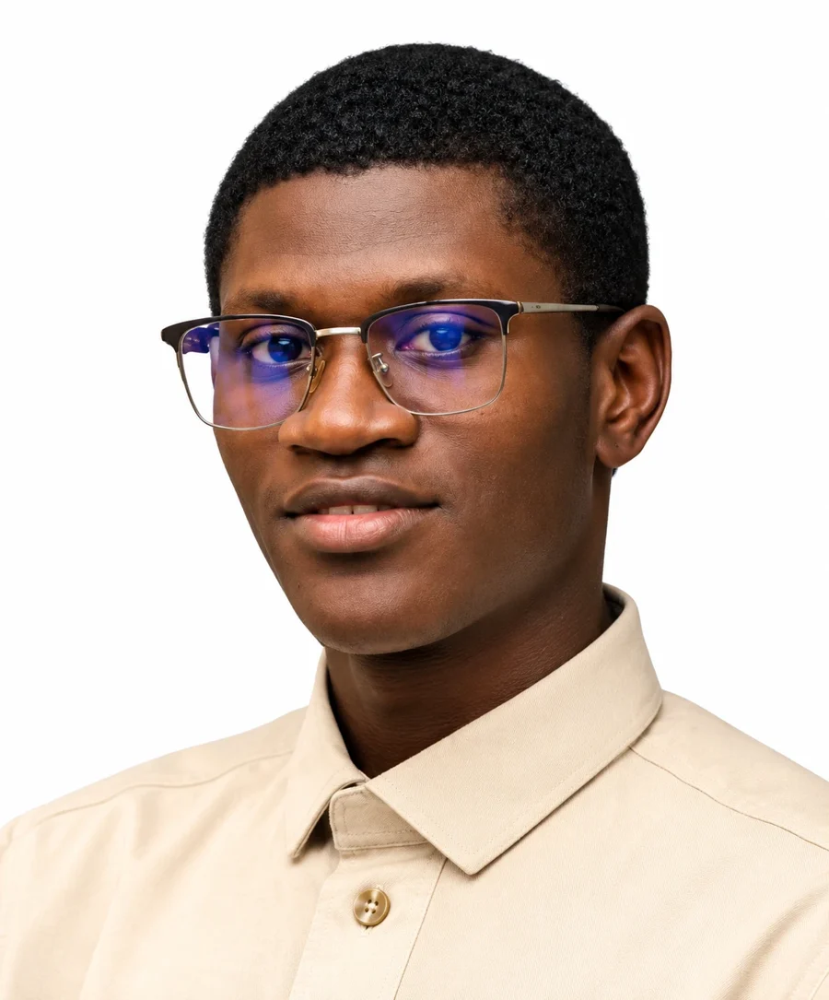
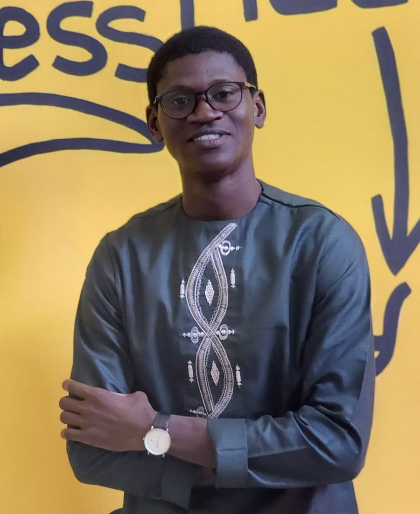
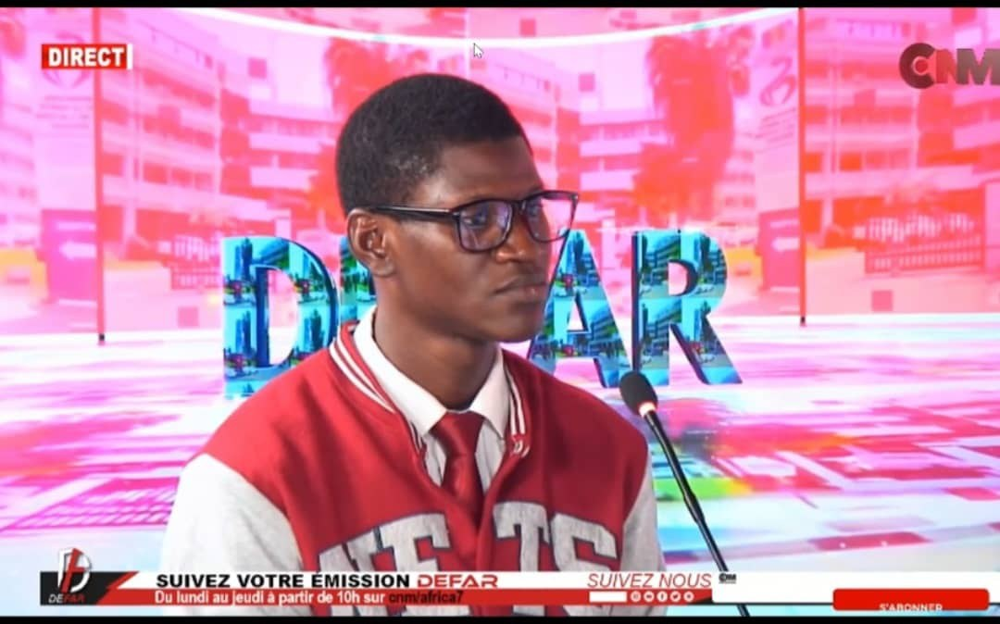
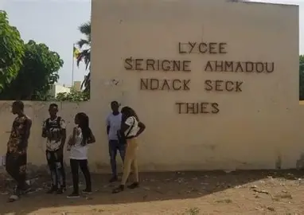
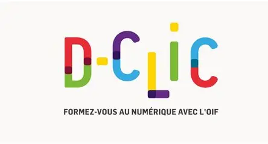
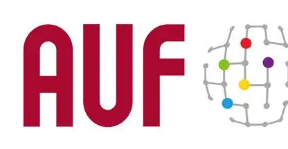
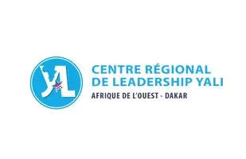

Développement Front-end
Interfaces responsives, accessibles et fidèles aux maquettes.
Développeur Full-Stack
Titulaire d'une Licence en Informatique de Gestion, je conçois et développe des applications web de bout en bout — du traitement des données côté serveur avec Python & Django aux interfaces modernes avec React.js & Tailwind CSS. J'allie rigueur technique, leadership et communication pour livrer des solutions centrées sur l'utilisateur.


À propos
Développeur Full-Stack formé à l'Université Catholique de l'Afrique de l'Ouest (UCAO), j'ai acquis une expérience concrète en entreprise et dans l'administration : à la SENELEC, j'ai conçu une application qui transforme les extractions de ventes en écritures comptables prêtes à être chargées dans Oracle ; au Ministère de l'Éducation Nationale, j'ai contribué à une plateforme destinée aux enseignants.
En parallèle, j'ai fondé et présidé le Club de Leadership Étudiant de l'UCAO Saint-Michel et présenté l'émission L'Agora des Jeunes sur Challenge New Media TV. Ces expériences m'ont appris à écouter, à structurer un message et à piloter un projet en équipe — des qualités que j'apporte dans chaque ligne de code.
Compétences
Des technologies maîtrisées en projet réel, du back-end à l'interface.
Interfaces responsives, accessibles et fidèles aux maquettes.
Logique métier, traitement et transformation de données, contrôles de cohérence.
Mise en page rapide et cohérente, design system utilitaire.
Notions d'analyse de données et de machine learning appliquées au numérique.
Maquettes, prototypes et supports visuels avant le développement.
Versionnement, collaboration et bureautique professionnelle.
Expérience
Des missions concrètes, en entreprise, dans l'administration et dans les médias.
SENELEC · Société Nationale d'Électricité du Sénégal
Conception et développement d'une application web qui transforme les extractions de ventes (Woyofal et compteurs classiques) en écritures comptables au format attendu pour le chargement dans Oracle.
Ministère de l'Éducation Nationale
Contribution au développement d'une plateforme web destinée aux enseignants.
Challenge New Media TV (CNM)
Animation d'une émission consacrée à la jeunesse, au numérique et à l'entrepreneuriat.

Projets
Contexte, rôle, fonctionnalités et stack de chaque projet.
Application métier · SENELEC
Outil interne qui automatise la transformation des ventes Woyofal et des compteurs classiques en écritures comptables conformes au format d'import Oracle.
Rôle : conception & développement full-stack
Site vitrine
Plateforme de présentation des services d'une école de prise de parole : offres, formations et prise de contact.
Site personnel
Le site que vous consultez : présentation de mon parcours, de mes compétences et de mes projets.
Formation
Université Catholique de l'Afrique de l'Ouest (UCAO)
2025 — 2026
Lycée Ahmadou Ndack Seck de Thiès
2022 — 2023
ONFP · Programme D-CLIC (OIF)
2025
Agence Universitaire de la Francophonie
2024
Force-N
2025
YALI Dakar — Réseau des Alumni
2024
Académie de la Paix — FNJPS
2025
Club de Leadership et de l'Entrepreneuriat du Sénégal
2024Leadership & engagement
UCAO Saint-Michel · depuis 2025
J'ai créé ce club pour offrir aux étudiants un espace où développer leur confiance, leur prise de parole et leur esprit d'initiative.
Contact
Une offre de stage, un projet web ou une collaboration ? Écrivez-moi, je réponds rapidement.
Télécharger mon CV